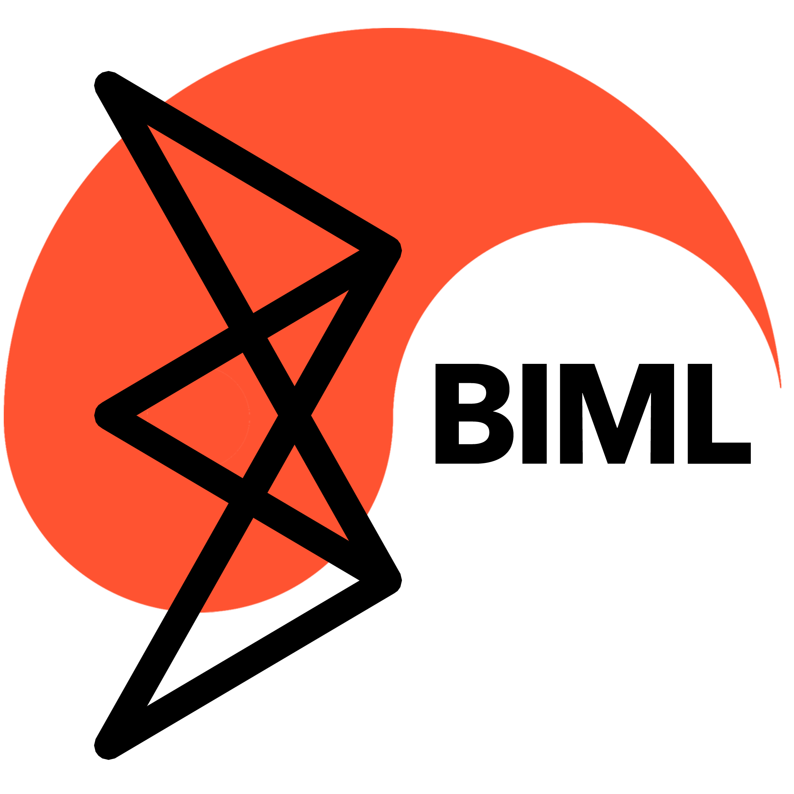
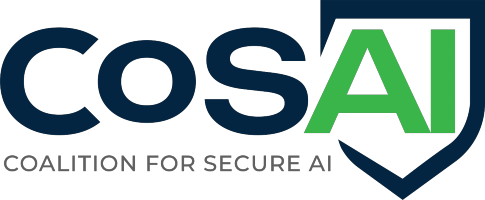
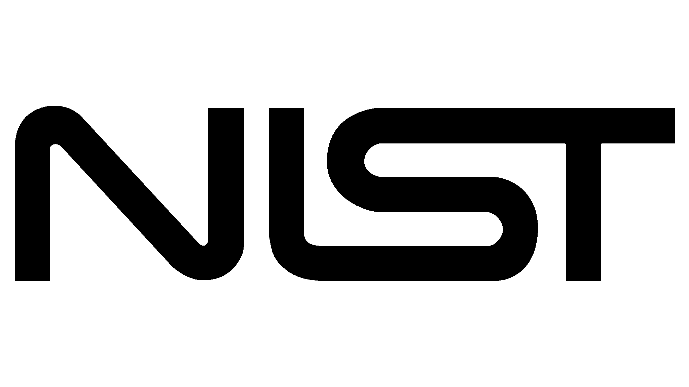
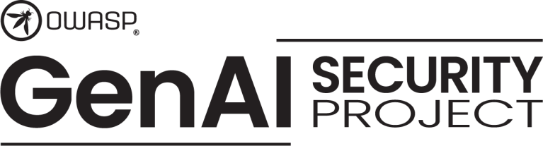
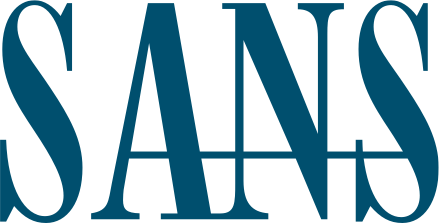

MOSAIC is a coordination structure for the initiatives writing AI security standards and guidelines — reducing inconsistency, duplicate work, and gaps, so practitioners get a clear path forward instead of ten conflicting answers.

The people who write the frameworks that will shape AI security sat down together and agreed to coordinate as a collective — the first collaboration of its kind among AI security standard organizations.
MOSAIC — Multi-Organization Secure AI Coordination — provides a coordination structure for initiatives working on AI security standards and guidelines, reducing inconsistencies, duplicate work, misalignment, and gaps.
The end goal is a standards and guideline landscape that gives clear guidance for securing and overseeing the AI systems we increasingly connect to everything and trust with our sensitive data. The approach is deliberately lightweight: improve consistency and quality across initiatives without adding process overhead, while every participant keeps its independence.
Organizations are connecting AI to everything at speed — while the guidance meant to secure it stays fragmented and hard to apply.
AI systems are vulnerable to both existing and new classes of attack that require specific countermeasures — and many organizations aren't prepared.
Practitioners face multiple frameworks, overlapping recommendations, and inconsistent terminology. Each initiative has strengths — and blind spots.
When risks materialize, projects pause and designs get revisited. What looks like speed at the start often turns into rework later.
Aligning standards and guidance across initiatives reduces fragmentation, improves clarity, and gives practitioners a coherent path forward — letting organizations move fast without losing control.
At the AI Security Policy Forum — organized and led by the OWASP AI Exchange with the SANS Institute as co-host — leading standardization initiatives came together and agreed to begin coordinating collectively on AI security. The invitation-only session ran under Chatham House rules and was led by Rob van der Veer, founder of the AI Exchange.
AI's possibilities and challenges are evolving rapidly, and adoption is currently outpacing security — leaving security as an afterthought. Standards today are fragmented, creating uncertainty and slowing innovation. A cohesive standards landscape is required to enable both speed and safe adoption.





Standard makers were joined by journalists and representatives from the International Telecommunication Union (ITU), the Aspen Institute, academia, and government — helping prioritize the topics to focus on. Meet the people →